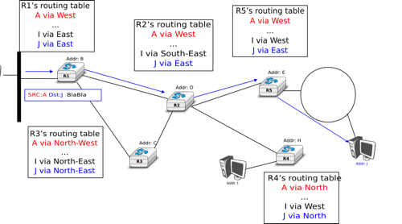
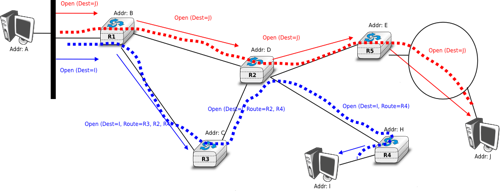
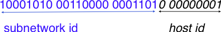
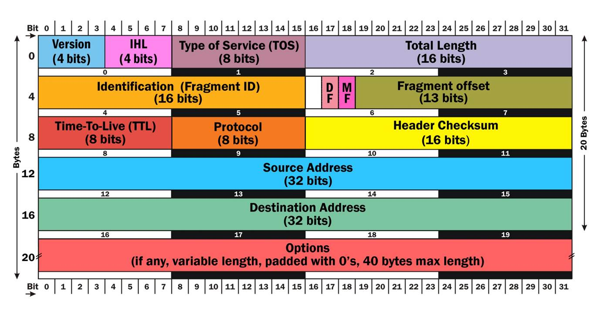
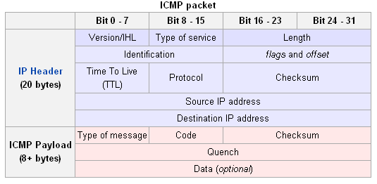

Created: 2016-10-18 Tue 12:18
Network layer is responsible for efficient data delivery from point A to point B.
The unit of information in network layer is called a packet

Pros:
Cons:

Pros:
Cons:
There's several ways of maintaining routing tables inside the network.
Tables are pre-computed and fixed manually
IPv4 is network layer protocol with the following properties:
IP adresses are commonly represented in dotted-decimal format.
No one of original developers of IPv4 ever imagined it would be used so widely, so no one thought about proper address allocation inb4.
Problem 1: routers cannot fit too much adresses in routing tables
Problem 2: actually, 32 bits is not enough for a global Internet
Separate IP address into two parts: subnetwork id and host id.

Make 3 classes of subnetworks, and give out subnetworks ID's on first-come-first-served basis:
| Class | High-order bits | Length of subnet id | Number of networks | Addresses per network |
|---|---|---|---|---|
| Class A | 0 | 8 bits | 128 | 16,777,216 (\({2^{24}}\)) |
| Class B | 10 | 16 bits | 16,384 | 65,536 (\({2^{16}}\)) |
| Class C | 110 | 24 bits | 2,097,152 | 256 (\({2^8}\)) |
Figure 4: Evolution of the size of the routing tables on the Internet (Jul 1988- Dec 1992)
A subnet ID is represented in the form A.B.C.D/p, where A.B.C.D is the smallest address in subnet and p is size of subnet ID in bits.

Fragmentation fields:
Set of flags which determine prioritizing rules for routers
| TOS Bits | Description |
|---|---|
| 0000 | Normal (default) |
| 0001 | Minimize cost |
| 0010 | Maximize reliability |
| 0100 | Maximize throughput |
| 1000 | Minimize delay |

IP to MAC mapping is usually stored locally in ARP cache, which is updated regurarly.
Allows assign IPs for new devices in local network automatically.
There are two types of routing algorithms used with IP protocol:
Why they are different?
IGP routing policy is based on means of efficiency, while EGP policy is based on economical reasons.